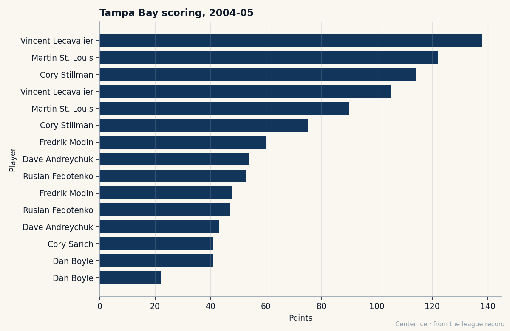

96 Speed at 33: The Man Calgary Bought Out and Tampa Bay Kept
No team drafted him. Ottawa cut him. Calgary bought him out at 28. Now his speed grade is 96, his contract expires this summer, and his club has 8 men on the injured list.
 Carol BinghamFeatures writer · Rinkside
Carol BinghamFeatures writer · Rinkside Martin St. Louis87 was 14 and leading his league in scoring when the Quebec provincial selectors passed him over. They were building something with reach.
Martin St. Louis87 was 14 and leading his league in scoring when the Quebec provincial selectors passed him over. They were building something with reach.
Twenty years later, he is 33, 5 feet 9, 185 pounds, and the Bureau's Book reads Speed 96, Acceleration 96, Agility 96, with a heart grade of 97. He has 90 points in 60 games for  Tampa Bay Lightning on $1.30M. His contract has 0 years left. Tampa Bay has 8 men on its injured list, more than any other club, and sits fifth in the league with 78 points.
Tampa Bay Lightning on $1.30M. His contract has 0 years left. Tampa Bay has 8 men on its injured list, more than any other club, and sits fifth in the league with 78 points.
What it took to get cut
St. Louis played one season of junior hockey, with the Hawkesbury Hawks of the Central Junior Hockey League, a junior A circuit in eastern Ontario. In 1992-93 he scored 37 goals and 87 points in 31 games. No major junior team called.
He went to the University of Vermont. Fifty-one points in 33 games as a freshman, all-conference rookie honours. By his senior year, 59 points in 36 games, the Edward Donnelly Award as the top male senior athlete at the University of Vermont, a place on the ECAC's all-decade team for the 1990s. The NHL did not draft him.
The Ottawa Senators offered a tryout before the 1997-98 season. They released him. He signed with the Cleveland Lumberjacks in the International Hockey League and scored 50 points in 56 games. The Calgary Flames picked him up in February 1998. They assigned him to Saint John in the AHL: 26 points in 25 games, then 20 more in 20 playoff games as Saint John reached the Calder Cup finals.
He made Calgary's roster to open 1998-99 and appeared in 13 games. The coaches moved him to the fourth line. Often he sat out. He returned to Saint John, led the AHL with 28 goals and 62 points, and earned a recall the next season. Fifty-six NHL games. Three goals. 18 points.
Then Calgary fired general manager Al Coates, who had liked St. Louis enough to pick up his contract option. The new management exposed him in the 2000 Expansion Draft. No team selected him. The Flames bought him out. He was 28 years old, undrafted, and a free agent.
Tampa Bay Lightning signed him. He made his debut there on October 6, 2000.
The legs
At 33, the Book reads Speed 96, Acceleration 96, Agility 96. His fighting grade is 50, his injury resistance is 51. He weighs 185 pounds. The provincial selectors would have said he was still too small.
His Development Index reads 0. No surge, no fade. His overall sits at 87. Last season he put up 43 goals and 79 assists in 82 games at 21.4 minutes a night. This season: 37 goals and 53 assists in 60 games at 22.5 minutes, a 123-point pace. The ice time is up. The assist total is down. Tampa Bay is asking more because there is less to ask from everyone else.

Eight men in the room
 Vincent Lecavalier90, 24, a 90 on the Book, 105 points this season, is out with a leg until 2005-04-01.
Vincent Lecavalier90, 24, a 90 on the Book, 105 points this season, is out with a leg until 2005-04-01.  Cory Stillman84, 84 on the Book, 75 points in 50 games, is out with a wrist until 2005-03-05. Bill Lindsay74 has a concussion,
Cory Stillman84, 84 on the Book, 75 points in 50 games, is out with a wrist until 2005-03-05. Bill Lindsay74 has a concussion,  Tim Taylor70 a hip,
Tim Taylor70 a hip,  Randy Robitaille74 a wrist,
Randy Robitaille74 a wrist,  Nolan Pratt73 a head injury.
Nolan Pratt73 a head injury.  Francis Bouillon76 carries a leg until April 25.
Francis Bouillon76 carries a leg until April 25.
Eight men. No other club has more. St. Louis has played every game. No injuries on record for him, not one in either season the desk has looked at. On a roster where the next healthy scorer behind him has 53 points in 60 games, he is carrying the production that Lecavalier would provide if the leg were whole.
Tampa Bay Lightning has gone WOTLOTLWOTLWWLLL in its last 10 games, 3 overtime losses in that stretch, 26 goals for against 29 against. The bottom of the league is deep. Tampa Bay sits fifth with 78 points and the math is still theirs to protect.

The summer
The contract has 0 years left. He will be a free agent. Tampa Bay Lightning made $31.23M in profit this season and pays $0.59M per point across a payroll of $45.79M. The question for the club is whether a number that satisfies a 33-year-old producing 90 points on a potential grade of 61 is one the franchise can find.
His morale is 98. He has been in Tampa Bay since 2000, after 13 games for a team that put him on the fourth line, 56 for the same team after it fired the man who wanted him, and a buyout by a third. The Bureau's potential grade, 61, says there is a 61 per cent chance the Book moves further. At 33, the desk would bet against it.
But the speed is 96. The acceleration is 96. Whatever the provincial selectors were building with reach, it was slower than this.